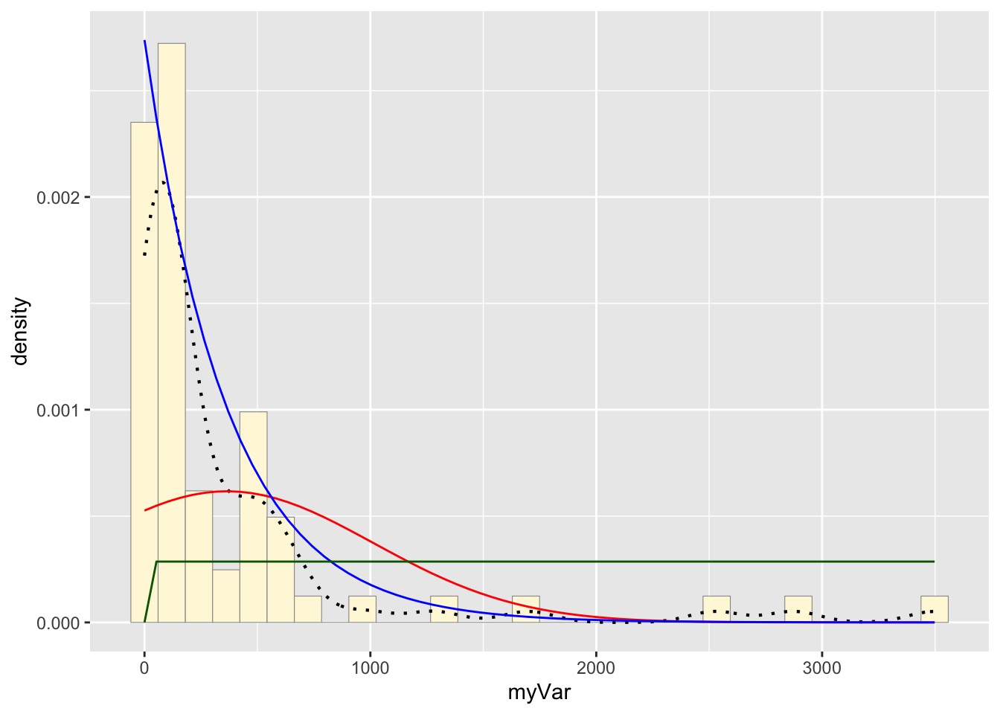
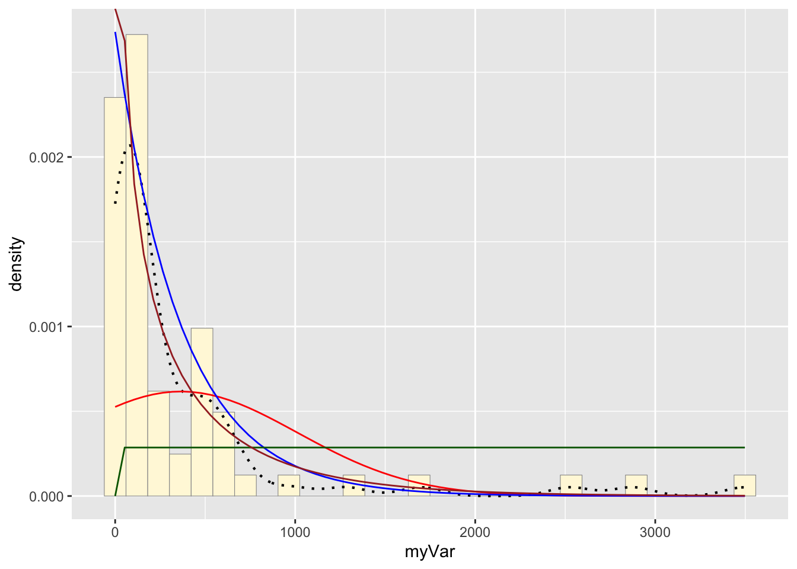
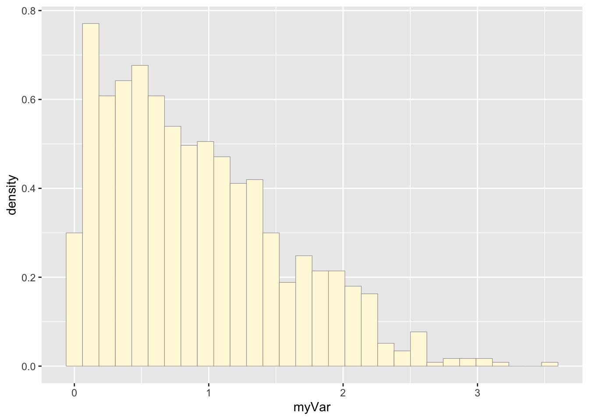
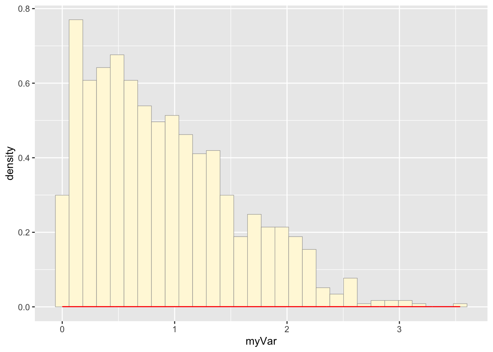
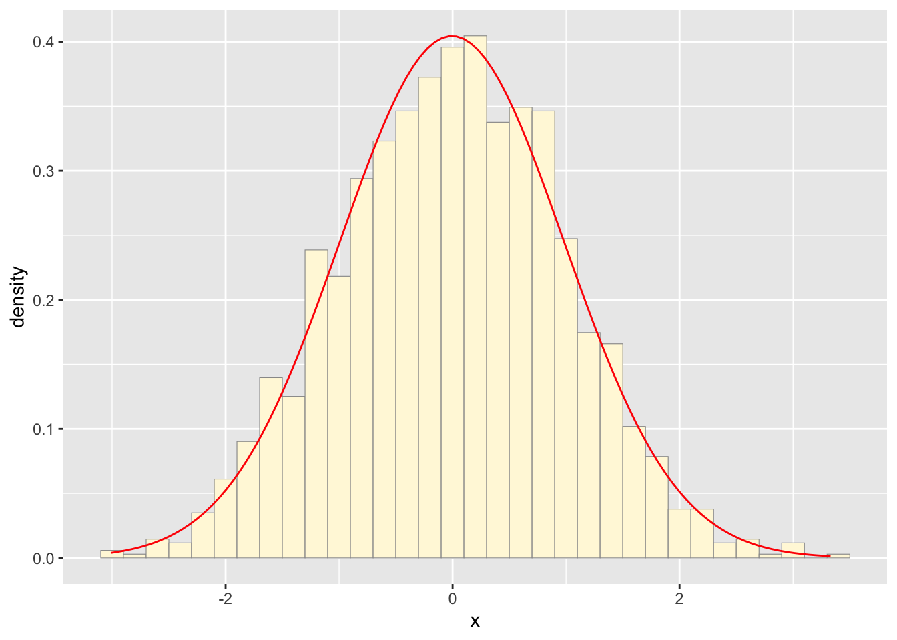
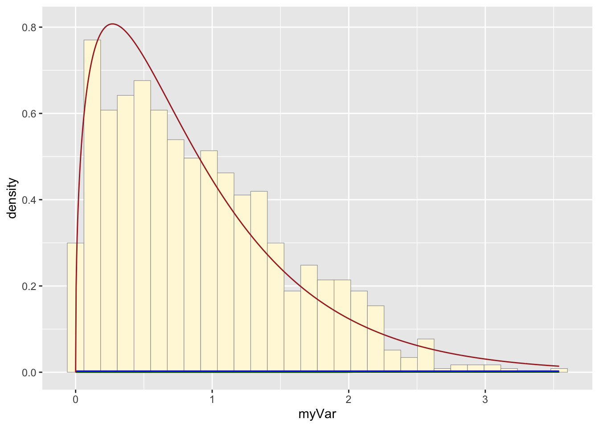

homework_08
Lamija Semic
3/19/25
1: Run sample code
a: Read in/generate data vector
library(ggplot2)
library(MASS) ##
## Attaching package: 'MASS'## The following object is masked from 'package:dplyr':
##
## select#z <- rnorm(n=3000, mean=0.2)
#z <- data.frame(1:3000, z)
#names(z) <- list("ID", "myVar")
#z <- z[z$myVar>0,]
#str(z)
#summary(z$myVar)b: Plot histogram
#p1 <- ggplot(data=z, aes(x=myVar, y=..density..)) +
#geom_histogram(color="grey60",fill="cornsilk",size=0.2)
#print(p1)c: Add empirical density curve
#p1 <- p1 + geom_density(linetype="dotted",size=0.75)
#print(p1)d: Get maximum likelihood parameters for normal
#normPars <- fitdistr(z$myVar,"normal")
#print(normPars)
#str(normPars)
#normPars$estimate["mean"] e: Plot normal probability density
#meanML <- normPars$estimate["mean"]
#sdML <- normPars$estimate["sd"]
#xval <- seq(0,max(z$myVar),len=length(z$myVar))
# stat <- stat_function(aes(x = xval, y = ..y..), fun = dnorm, colour="red", n = length(z$myVar), args = list(mean = meanML, sd = sdML))
#p1 + statf: Plot exponential probability density
#expoPars <- fitdistr(z$myVar,"exponential")
#rateML <- expoPars$estimate["rate"]
#stat2 <- stat_function(aes(x = xval, y = ..y..), fun = dexp, colour="blue", n = length(z$myVar), args = list(rate=rateML))
#p1 + stat + stat2g: Plot uniform probability density
#stat3 <- stat_function(aes(x = xval, y = ..y..), fun = dunif, colour="darkgreen", n = length(z$myVar), args = list(min=min(z$myVar), max=max(z$myVar)))
#p1 + stat + stat2 + stat3h: Plot gamma probability density
#gammaPars <- fitdistr(z$myVar,"gamma")
#shapeML <- gammaPars$estimate["shape"]
#rateML <- gammaPars$estimate["rate"]
#stat4 <- stat_function(aes(x = xval, y = ..y..), fun = dgamma, colour="brown", n = length(z$myVar), args = list(shape=shapeML, rate=rateML))
# p1 + stat + stat2 + stat3 + stat4g: Plot beta probability density
#pSpecial <- ggplot(data=z, aes(x=myVar/(max(myVar + 0.1)), y=..density..)) +
# geom_histogram(color="grey60",fill="cornsilk",size=0.2) +
# xlim(c(0,1)) +
# geom_density(size=0.75,linetype="dotted")
#betaPars <- fitdistr(x=z$myVar/max(z$myVar + 0.1),start=list(shape1=1,shape2=2),"beta")
#shape1ML <- betaPars$estimate["shape1"]
#shape2ML <- betaPars$estimate["shape2"]
#statSpecial <- stat_function(aes(x = xval, y = ..y..), fun = dbeta, colour="orchid", n = length(z$myVar), args = list(shape1=shape1ML,shape2=shape2ML))
#pSpecial + statSpecial2: Sample dataset
a:Read in data
z <- read.table("antcountydata.csv", header=TRUE, sep=",")
str(z)## 'data.frame': 67 obs. of 25 variables:
## $ n.species : int 15 50 62 36 63 42 59 32 10 31 ...
## $ n.samples : int 53 192 354 106 454 284 975 99 16 109 ...
## $ lat.centroid : num 41.3 41.8 41.8 41.5 41.4 ...
## $ long.centroid : num -73.4 -72.7 -73.2 -72.5 -72.9 ...
## $ elev.centroid.m : num 176.9 42.8 376.9 69.9 140.6 ...
## $ area.km2 : int 1621 1906 2383 956 1570 1725 1062 1329 1287 17687 ...
## $ mean.ann.temp : num 9.6 9.8 7.8 9.8 9.7 9.8 8.3 8.9 7.1 3.2 ...
## $ mean.diurnal.temp.range: num 10.8 11.8 11.5 10.6 10.7 11.1 11.6 12.1 11.3 12.5 ...
## $ isothermality : num 0.3 0.31 0.3 0.3 0.3 0.31 0.31 0.32 0.28 0.28 ...
## $ temp.seasonality.sd : num 86.9 90.7 90.2 86.5 87.3 ...
## $ max.temp : num 27.4 29.1 26.3 27.7 27.7 27.6 26.8 27.6 26.7 24.6 ...
## $ min.temp : num -8 -8.6 -10.8 -7.5 -7.6 -7.8 -10.1 -9.8 -12.7 -19.4 ...
## $ temp.range : num 35.4 37.7 37.1 35.2 35.3 35.4 36.9 37.4 39.4 44 ...
## $ mean.temp.wettest.Q : num 8.3 14.4 12.4 5.7 8.3 1.2 4.1 4.6 2.6 15.2 ...
## $ mean.temp.driest.Q : num -1.9 -1.1 -3.1 20.7 -0.7 20.5 -2.4 -1.8 18.4 -9.9 ...
## $ mean.temp.warmest.Q : num 20.5 21.3 19 20.7 20.8 20.5 19.4 19.9 19.3 16.4 ...
## $ mean.temp.coldest.Q : num -1.9 -2.3 -4.3 -1.6 -1.8 -1.4 -3.5 -2.9 -5.7 -11.3 ...
## $ ann.precip : int 1250 1167 1246 1239 1222 1229 1233 1218 1134 966 ...
## $ precip.wettest.month : int 117 106 113 118 113 121 116 117 120 103 ...
## $ precipldriest.month : int 88 81 88 91 88 87 87 89 83 53 ...
## $ precip.cv : int 8 7 7 7 7 9 7 7 11 19 ...
## $ precip.wettest.Q : int 338 309 328 331 328 337 326 329 325 296 ...
## $ precip.driest.Q : int 290 266 280 292 287 279 284 290 253 179 ...
## $ precip.warmest.Q : int 304 290 323 292 293 279 306 291 260 292 ...
## $ precip.coldest.Q : int 290 270 284 302 289 310 289 297 279 195 ...names(z) <- list("ID", "myVar")
z <- z[z$myVar>0,]
str(z)## 'data.frame': 67 obs. of 25 variables:
## $ ID : int 15 50 62 36 63 42 59 32 10 31 ...
## $ myVar: int 53 192 354 106 454 284 975 99 16 109 ...
## $ NA : num 41.3 41.8 41.8 41.5 41.4 ...
## $ NA : num -73.4 -72.7 -73.2 -72.5 -72.9 ...
## $ NA : num 176.9 42.8 376.9 69.9 140.6 ...
## $ NA : int 1621 1906 2383 956 1570 1725 1062 1329 1287 17687 ...
## $ NA : num 9.6 9.8 7.8 9.8 9.7 9.8 8.3 8.9 7.1 3.2 ...
## $ NA : num 10.8 11.8 11.5 10.6 10.7 11.1 11.6 12.1 11.3 12.5 ...
## $ NA : num 0.3 0.31 0.3 0.3 0.3 0.31 0.31 0.32 0.28 0.28 ...
## $ NA : num 86.9 90.7 90.2 86.5 87.3 ...
## $ NA : num 27.4 29.1 26.3 27.7 27.7 27.6 26.8 27.6 26.7 24.6 ...
## $ NA : num -8 -8.6 -10.8 -7.5 -7.6 -7.8 -10.1 -9.8 -12.7 -19.4 ...
## $ NA : num 35.4 37.7 37.1 35.2 35.3 35.4 36.9 37.4 39.4 44 ...
## $ NA : num 8.3 14.4 12.4 5.7 8.3 1.2 4.1 4.6 2.6 15.2 ...
## $ NA : num -1.9 -1.1 -3.1 20.7 -0.7 20.5 -2.4 -1.8 18.4 -9.9 ...
## $ NA : num 20.5 21.3 19 20.7 20.8 20.5 19.4 19.9 19.3 16.4 ...
## $ NA : num -1.9 -2.3 -4.3 -1.6 -1.8 -1.4 -3.5 -2.9 -5.7 -11.3 ...
## $ NA : int 1250 1167 1246 1239 1222 1229 1233 1218 1134 966 ...
## $ NA : int 117 106 113 118 113 121 116 117 120 103 ...
## $ NA : int 88 81 88 91 88 87 87 89 83 53 ...
## $ NA : int 8 7 7 7 7 9 7 7 11 19 ...
## $ NA : int 338 309 328 331 328 337 326 329 325 296 ...
## $ NA : int 290 266 280 292 287 279 284 290 253 179 ...
## $ NA : int 304 290 323 292 293 279 306 291 260 292 ...
## $ NA : int 290 270 284 302 289 310 289 297 279 195 ...summary(z$myVar)## Min. 1st Qu. Median Mean 3rd Qu. Max.
## 2.0 54.0 112.0 365.2 453.5 3498.0print(z)## ID myVar NA NA NA NA NA NA NA NA NA NA
## 1 15 53 41.27037 -73.38868 176.92 1621 9.6 10.8 0.30 86.88 27.4 -8.0
## 2 50 192 41.80604 -72.73271 42.76 1906 9.8 11.8 0.31 90.70 29.1 -8.6
## 3 62 354 41.79207 -73.24551 376.85 2383 7.8 11.5 0.30 90.18 26.3 -10.8
## 4 36 106 41.46371 -72.53628 69.94 956 9.8 10.6 0.30 86.46 27.7 -7.5
## 5 63 454 41.41133 -72.93209 140.57 1570 9.7 10.7 0.30 87.34 27.7 -7.6
## 6 42 284 41.48932 -72.10095 63.75 1725 9.8 11.1 0.31 84.95 27.6 -7.8
## 7 59 975 41.85441 -72.33728 227.79 1062 8.3 11.6 0.31 88.35 26.8 -10.1
## 8 32 99 41.82970 -71.98752 105.35 1329 8.9 12.1 0.32 88.13 27.6 -9.8
## 9 10 16 44.16497 -70.20523 79.43 1287 7.1 11.3 0.28 96.23 26.7 -12.7
## 10 31 109 46.65539 -68.59930 243.43 17687 3.2 12.5 0.28 107.02 24.6 -19.4
## 11 36 88 43.84401 -70.39729 96.06 3152 7.1 11.5 0.29 93.89 26.3 -12.6
## 12 13 26 44.97659 -70.43745 770.43 4517 3.0 11.4 0.28 99.72 22.7 -17.7
## 13 66 658 44.66924 -68.35556 44.26 6089 6.5 11.2 0.29 93.41 25.7 -12.8
## 14 47 231 44.40802 -69.76055 83.26 2463 7.0 11.8 0.29 97.08 27.0 -13.2
## 15 20 93 44.14914 -69.17305 49.65 2958 7.4 11.1 0.29 91.52 26.2 -11.5
## 16 11 23 44.07397 -69.54331 48.33 1813 7.5 11.0 0.29 92.30 26.3 -11.5
## 17 36 75 44.49497 -70.75481 279.09 5633 5.3 12.5 0.30 99.79 25.7 -15.9
## 18 48 140 45.39688 -68.64795 71.43 9210 5.3 12.5 0.29 101.07 26.0 -16.2
## 19 26 55 45.83410 -69.28309 292.78 11336 3.8 12.0 0.28 104.03 24.5 -17.8
## 20 10 12 43.97070 -69.86159 0.00 958 7.7 10.8 0.28 92.63 26.3 -11.4
## 21 31 60 45.51495 -69.95762 511.85 10606 3.2 11.8 0.28 103.03 23.5 -18.3
## 22 33 314 44.50350 -69.14654 114.31 2209 6.7 11.6 0.29 95.27 26.2 -13.2
## 23 54 556 45.02797 -67.63465 70.62 8430 5.8 11.5 0.29 94.05 25.2 -13.8
## 24 60 3498 43.47897 -70.71433 69.59 3292 7.7 12.7 0.31 93.29 27.7 -12.0
## 25 63 482 41.72768 -70.29937 3.14 1026 9.7 8.7 0.27 79.81 25.6 -5.9
## 26 44 703 42.37096 -73.20682 553.36 2411 6.0 10.8 0.29 91.59 24.6 -12.4
## 27 18 66 41.80235 -71.11502 2.74 1440 9.9 10.6 0.30 85.14 27.8 -7.1
## 28 77 512 41.39729 -70.65680 20.00 269 10.1 8.7 0.27 79.52 25.8 -5.3
## 29 73 438 42.67141 -70.95485 18.76 1290 9.2 11.2 0.30 88.46 27.9 -8.8
## 30 47 475 42.58620 -72.59739 71.66 1818 8.0 13.1 0.32 94.57 28.2 -12.3
## 31 57 648 42.13508 -72.63105 20.21 1601 9.5 12.4 0.31 93.06 29.4 -9.6
## 32 46 535 42.33992 -72.66962 99.05 1370 8.4 12.7 0.32 93.39 28.3 -11.2
## 33 82 453 42.48592 -71.39202 53.30 2134 8.9 11.9 0.31 90.14 27.9 -9.7
## 34 62 2874 41.27764 -70.07367 13.93 124 9.7 7.6 0.27 73.51 23.8 -4.3
## 35 58 460 42.15997 -71.21388 38.17 1036 9.6 11.4 0.31 87.45 28.3 -8.3
## 36 84 1700 41.95324 -70.81294 32.97 1712 9.9 10.3 0.29 84.61 27.5 -7.1
## 37 66 2526 42.33051 -71.07642 5.36 150 9.8 10.8 0.29 87.38 28.3 -7.8
## 38 69 1283 42.35115 -71.90534 276.89 3919 7.7 11.5 0.30 91.25 26.5 -11.1
## 39 17 17 43.50802 -71.42890 292.02 1039 6.0 12.8 0.31 94.74 26.2 -14.3
## 40 28 45 43.88417 -71.20140 168.53 2419 6.1 13.5 0.32 96.68 26.8 -15.1
## 41 31 81 42.91974 -72.25241 208.70 1834 6.8 13.1 0.32 93.97 27.1 -13.4
## 42 34 144 44.68964 -71.30268 538.61 4665 3.7 12.2 0.29 99.83 23.9 -17.3
## 43 39 64 43.93915 -71.81918 543.50 4439 4.7 11.9 0.29 96.24 24.4 -15.4
## 44 36 85 42.91463 -71.71639 232.39 2269 7.4 12.1 0.31 93.66 27.0 -12.0
## 45 36 66 43.29706 -71.67808 132.51 2419 7.1 13.0 0.31 95.65 27.6 -13.5
## 46 50 111 42.98557 -71.12877 54.44 1800 8.3 12.4 0.31 91.74 28.0 -10.9
## 47 53 200 43.29834 -71.03009 115.91 956 7.5 12.8 0.32 92.57 27.6 -12.2
## 48 23 46 43.36073 -72.22246 210.27 1391 6.7 12.6 0.30 96.63 27.1 -13.8
## 49 4 11 41.71513 -71.28277 9.67 117 10.0 10.2 0.29 85.07 27.6 -6.8
## 50 7 7 41.67121 -71.59372 75.70 487 9.4 10.7 0.30 85.09 27.1 -7.8
## 51 2 4 41.55612 -71.23806 7.62 813 10.2 9.4 0.28 82.90 27.0 -5.9
## 52 14 21 41.87276 -71.58127 108.33 1129 9.3 11.4 0.31 87.34 27.7 -8.7
## 53 42 216 41.47244 -71.62310 28.67 1458 9.8 10.1 0.30 81.90 26.6 -6.7
## 54 18 109 44.02813 -73.12987 115.68 1995 7.0 12.1 0.29 99.94 27.5 -13.7
## 55 33 80 43.03342 -73.09395 585.98 1751 5.6 11.6 0.29 94.47 25.0 -13.8
## 56 12 148 44.46520 -72.10204 291.32 1686 5.1 12.1 0.28 101.87 25.8 -16.0
## 57 45 613 44.45956 -73.05299 160.25 1396 6.6 11.1 0.27 101.30 26.8 -13.9
## 58 15 152 44.72892 -71.73763 502.39 1722 3.8 12.1 0.29 101.22 24.1 -17.3
## 59 15 118 44.85492 -72.89071 199.25 1650 5.8 11.1 0.27 102.04 25.8 -15.1
## 60 5 8 44.82464 -73.29546 39.41 215 6.8 11.1 0.27 102.72 26.8 -14.1
## 61 23 131 44.60564 -72.64163 176.09 1194 5.9 11.6 0.28 101.51 26.3 -14.9
## 62 2 2 44.00610 -72.37720 557.57 1785 4.3 11.7 0.29 96.31 24.0 -15.6
## 63 6 11 44.82645 -72.24683 311.37 1805 5.1 11.7 0.27 103.17 25.7 -16.1
## 64 13 29 43.57756 -73.03166 167.01 2414 7.2 12.6 0.30 98.60 27.9 -13.4
## 65 23 168 44.27138 -72.61659 212.38 1787 5.7 11.8 0.28 98.94 26.0 -14.8
## 66 7 45 42.99163 -72.71206 404.96 2044 6.3 12.4 0.31 94.93 26.2 -13.7
## 67 25 112 43.57914 -72.58602 481.86 2515 5.2 12.3 0.30 96.18 25.2 -15.1
## NA NA NA NA NA NA NA NA NA NA NA NA NA
## 1 35.4 8.3 -1.9 20.5 -1.9 1250 117 88 8 338 290 304 290
## 2 37.7 14.4 -1.1 21.3 -2.3 1167 106 81 7 309 266 290 270
## 3 37.1 12.4 -3.1 19.0 -4.3 1246 113 88 7 328 280 323 284
## 4 35.2 5.7 20.7 20.7 -1.6 1239 118 91 7 331 292 292 302
## 5 35.3 8.3 -0.7 20.8 -1.8 1222 113 88 7 328 287 293 289
## 6 35.4 1.2 20.5 20.5 -1.4 1229 121 87 9 337 279 279 310
## 7 36.9 4.1 -2.4 19.4 -3.5 1233 116 87 7 326 284 306 289
## 8 37.4 4.6 -1.8 19.9 -2.9 1218 117 89 7 329 290 291 297
## 9 39.4 2.6 18.4 19.3 -5.7 1134 120 83 11 325 253 260 279
## 10 44.0 15.2 -9.9 16.4 -11.3 966 103 53 19 296 179 292 195
## 11 38.9 2.7 18.2 19.0 -5.4 1162 127 83 13 340 251 258 290
## 12 40.4 15.4 -9.2 15.4 -10.4 1122 112 68 14 317 227 317 240
## 13 38.5 2.4 18.2 18.2 -6.0 1162 130 79 15 349 245 245 305
## 14 40.2 2.4 -4.8 19.1 -6.0 1088 113 73 11 308 244 263 250
## 15 37.7 3.3 18.9 18.9 -4.8 1181 131 80 15 355 249 249 297
## 16 37.8 3.3 19.1 19.1 -4.8 1145 124 79 13 336 249 249 284
## 17 41.6 0.6 -6.8 17.7 -8.2 1079 111 68 12 298 224 292 235
## 18 42.2 0.6 -7.0 17.9 -8.4 1043 114 72 13 300 219 272 244
## 19 42.3 16.7 -9.0 16.7 -10.2 1015 103 59 16 301 193 301 209
## 20 37.7 3.4 18.6 19.3 -4.7 1126 120 77 13 327 242 245 284
## 21 41.8 16.0 -9.4 16.0 -10.7 1034 103 59 16 304 196 304 214
## 22 39.4 2.2 -4.8 18.6 -6.1 1151 126 80 13 341 259 259 278
## 23 39.0 1.7 17.6 17.6 -6.8 1165 129 82 14 348 250 250 304
## 24 39.7 3.2 18.6 19.5 -4.7 1166 131 84 14 346 254 259 290
## 25 31.5 2.2 17.1 19.8 -0.6 1131 116 74 12 319 242 246 297
## 26 37.0 15.4 -5.1 17.5 -6.2 1218 114 84 9 333 266 331 270
## 27 34.9 1.4 18.3 20.8 -1.1 1192 118 85 10 334 264 272 312
## 28 31.1 2.6 17.4 20.2 -0.1 1157 115 75 12 326 250 253 306
## 29 36.7 5.1 20.5 20.5 -2.4 1147 121 82 11 326 256 256 293
## 30 40.5 13.1 -3.4 19.8 -4.8 1121 103 78 8 299 250 294 258
## 31 39.0 14.3 -1.7 21.3 -2.9 1104 100 77 7 292 249 284 254
## 32 39.5 13.4 -2.8 20.1 -4.1 1131 103 80 7 300 254 294 260
## 33 37.6 4.5 20.3 20.3 -3.1 1117 115 85 9 310 257 257 283
## 34 28.1 3.1 16.0 19.1 0.4 1094 112 67 13 317 225 248 305
## 35 36.6 0.7 18.4 20.7 -1.9 1166 118 84 9 326 259 265 303
## 36 34.6 1.5 18.2 20.7 -1.1 1229 123 85 10 346 267 272 325
## 37 36.1 1.0 18.6 21.0 -1.6 1122 113 79 10 315 250 252 295
## 38 37.6 3.3 -3.3 19.2 -4.5 1179 112 85 6 312 276 294 279
## 39 40.5 1.3 -5.4 17.8 -6.8 1153 118 83 10 319 253 295 267
## 40 41.9 1.4 -5.5 18.2 -7.0 1221 125 89 10 344 275 303 295
## 41 40.5 18.5 -4.6 18.5 -5.9 1058 100 73 9 289 233 289 239
## 42 41.2 16.1 -8.5 16.1 -9.7 1123 120 67 16 336 216 336 234
## 43 39.8 16.6 -7.0 16.6 -8.3 1151 115 74 13 327 231 327 245
## 44 39.0 2.8 -3.8 19.2 -5.1 1130 114 85 8 313 262 278 273
## 45 41.1 2.4 -4.4 19.1 -5.8 1037 103 73 9 285 227 267 241
## 46 38.9 3.8 -2.7 19.9 -4.0 1098 117 81 10 313 253 258 266
## 47 39.8 3.0 -3.6 19.2 -4.9 1127 123 84 11 326 259 263 272
## 48 40.9 18.7 -5.0 18.7 -6.3 1001 96 68 11 273 211 273 221
## 49 34.4 1.5 18.3 20.9 -1.0 1181 118 82 11 332 258 265 310
## 50 34.9 0.9 17.8 20.2 -1.7 1213 121 85 10 337 269 272 312
## 51 32.9 2.2 18.2 20.8 -0.4 1159 116 78 12 329 251 255 308
## 52 36.4 0.4 18.0 20.4 -2.2 1209 120 88 9 332 274 279 307
## 53 33.3 1.7 17.6 20.2 -0.9 1184 119 80 12 331 257 261 306
## 54 41.2 18.3 -5.2 19.4 -6.5 924 105 50 20 282 164 281 173
## 55 38.8 17.4 -5.9 17.4 -7.0 1271 122 84 11 345 271 345 280
## 56 41.8 17.7 -7.3 17.7 -8.7 998 111 56 19 312 185 312 202
## 57 40.7 19.2 -5.8 19.2 -7.1 928 107 47 22 294 158 294 164
## 58 41.4 16.3 -8.5 16.3 -9.9 1102 125 62 20 349 202 349 221
## 59 40.9 18.3 -6.8 18.3 -8.1 1015 114 52 21 316 177 316 186
## 60 40.9 19.4 -5.9 19.4 -7.2 834 97 43 23 265 143 265 149
## 61 41.2 18.5 -6.5 18.5 -7.8 991 111 53 20 309 178 309 189
## 62 39.6 16.2 -7.4 16.2 -8.6 1142 118 71 14 327 230 327 243
## 63 41.8 17.8 -7.5 17.8 -8.9 1050 117 59 19 328 196 328 212
## 64 41.3 19.5 -4.8 19.5 -6.1 1010 111 58 17 299 192 299 200
## 65 40.8 17.9 -6.4 17.9 -7.7 976 108 56 18 296 184 296 195
## 66 39.9 11.4 -5.2 18.1 -6.5 1217 112 86 8 320 273 319 283
## 67 40.3 17.2 -6.5 17.2 -7.7 1166 114 76 11 316 245 316 257summary(z)## ID myVar NA NA
## Min. : 2.00 Min. : 2.0 Min. :41.27 Min. :-73.39
## 1st Qu.:16.00 1st Qu.: 54.0 1st Qu.:41.91 1st Qu.:-72.59
## Median :34.00 Median : 112.0 Median :43.30 Median :-71.59
## Mean :35.75 Mean : 365.2 Mean :43.27 Mean :-71.42
## 3rd Qu.:51.50 3rd Qu.: 453.5 3rd Qu.:44.43 3rd Qu.:-70.69
## Max. :84.00 Max. :3498.0 Max. :46.66 Max. :-67.63
## NA NA NA NA
## Min. : 0.00 Min. : 117 Min. : 3.000 Min. : 7.60
## 1st Qu.: 48.99 1st Qu.: 1288 1st Qu.: 5.850 1st Qu.:11.10
## Median :114.31 Median : 1785 Median : 7.200 Median :11.60
## Mean :181.65 Mean : 2622 Mean : 7.281 Mean :11.53
## 3rd Qu.:260.16 3rd Qu.: 2419 3rd Qu.: 9.350 3rd Qu.:12.25
## Max. :770.43 Max. :17687 Max. :10.200 Max. :13.50
## NA NA NA NA
## Min. :0.2700 Min. : 73.51 Min. :22.70 Min. :-19.40
## 1st Qu.:0.2850 1st Qu.: 88.24 1st Qu.:25.75 1st Qu.:-14.55
## Median :0.2900 Median : 93.66 Median :26.70 Median :-12.40
## Mean :0.2949 Mean : 93.20 Mean :26.50 Mean :-11.98
## 3rd Qu.:0.3100 3rd Qu.: 97.84 3rd Qu.:27.60 3rd Qu.: -8.75
## Max. :0.3200 Max. :107.02 Max. :29.40 Max. : -4.30
## NA NA NA NA
## Min. :28.10 Min. : 0.400 Min. :-9.90 Min. :15.40
## 1st Qu.:36.80 1st Qu.: 2.300 1st Qu.:-5.90 1st Qu.:17.90
## Median :39.00 Median : 4.500 Median :-3.30 Median :19.20
## Mean :38.48 Mean : 8.488 Mean : 3.21 Mean :18.96
## 3rd Qu.:40.85 3rd Qu.:16.150 3rd Qu.:18.10 3rd Qu.:20.20
## Max. :44.00 Max. :19.500 Max. :20.70 Max. :21.30
## NA NA NA NA
## Min. :-11.30 Min. : 834 Min. : 96.0 Min. :43.00
## 1st Qu.: -7.15 1st Qu.:1084 1st Qu.:111.0 1st Qu.:68.00
## Median : -5.40 Median :1142 Median :115.0 Median :79.00
## Mean : -5.16 Mean :1124 Mean :114.9 Mean :75.24
## 3rd Qu.: -2.35 3rd Qu.:1181 3rd Qu.:120.0 3rd Qu.:84.00
## Max. : 0.40 Max. :1271 Max. :131.0 Max. :91.00
## NA NA NA NA
## Min. : 6.00 Min. :265.0 Min. :143.0 Min. :245.0
## 1st Qu.: 9.00 1st Qu.:308.5 1st Qu.:224.5 1st Qu.:260.5
## Median :11.00 Median :326.0 Median :250.0 Median :284.0
## Mean :12.21 Mean :319.6 Mean :240.2 Mean :284.9
## 3rd Qu.:14.00 3rd Qu.:332.5 3rd Qu.:263.0 3rd Qu.:303.5
## Max. :23.00 Max. :355.0 Max. :292.0 Max. :349.0
## NA
## Min. :149.0
## 1st Qu.:239.5
## Median :278.0
## Mean :263.0
## 3rd Qu.:296.0
## Max. :325.0b: Plot histogram
p1 <- ggplot(data=z, aes(x=myVar, y=..density..)) +
geom_histogram(color="grey60",fill="cornsilk",size=0.2) ## Warning: Using `size` aesthetic for lines was
## deprecated in ggplot2 3.4.0.
## ℹ Please use `linewidth` instead.
## This warning is displayed once every 8
## hours.
## Call
## `lifecycle::last_lifecycle_warnings()` to
## see where this warning was generated.print(p1)## Warning: The dot-dot notation (`..density..`) was
## deprecated in ggplot2 3.4.0.
## ℹ Please use `after_stat(density)`
## instead.
## This warning is displayed once every 8
## hours.
## Call
## `lifecycle::last_lifecycle_warnings()` to
## see where this warning was generated.## `stat_bin()` using `bins = 30`. Pick
## better value with `binwidth`.c: Add empirical density curve
p1 <- p1 + geom_density(linetype="dotted",size=0.75)
print(p1)## `stat_bin()` using `bins = 30`. Pick
## better value with `binwidth`.
d: Get maximum likelihood parameters for normal
normPars <- fitdistr(z$myVar,"normal")
print(normPars)## mean sd
## 365.22388 647.02810
## ( 79.04706) ( 55.89471)str(normPars)## List of 5
## $ estimate: Named num [1:2] 365 647
## ..- attr(*, "names")= chr [1:2] "mean" "sd"
## $ sd : Named num [1:2] 79 55.9
## ..- attr(*, "names")= chr [1:2] "mean" "sd"
## $ vcov : num [1:2, 1:2] 6248 0 0 3124
## ..- attr(*, "dimnames")=List of 2
## .. ..$ : chr [1:2] "mean" "sd"
## .. ..$ : chr [1:2] "mean" "sd"
## $ n : int 67
## $ loglik : num -529
## - attr(*, "class")= chr "fitdistr"normPars$estimate["mean"] ## mean
## 365.2239e: Plot normal probability density
meanML <- normPars$estimate["mean"]
sdML <- normPars$estimate["sd"]
xval <- seq(0,max(z$myVar),len=length(z$myVar))
stat <- stat_function(aes(x = xval, y = ..y..), fun = dnorm, colour="red", n = length(z$myVar), args = list(mean = meanML, sd = sdML))
p1 + stat## `stat_bin()` using `bins = 30`. Pick
## better value with `binwidth`.f: Plot exponential probability density
expoPars <- fitdistr(z$myVar,"exponential")
rateML <- expoPars$estimate["rate"]
stat2 <- stat_function(aes(x = xval, y = ..y..), fun = dexp, colour="blue", n = length(z$myVar), args = list(rate=rateML))
p1 + stat + stat2## `stat_bin()` using `bins = 30`. Pick
## better value with `binwidth`.
g: Plot uniform probability density
stat3 <- stat_function(aes(x = xval, y = ..y..), fun = dunif, colour="darkgreen", n = length(z$myVar), args = list(min=min(z$myVar), max=max(z$myVar)))
p1 + stat + stat2 + stat3## `stat_bin()` using `bins = 30`. Pick
## better value with `binwidth`.
h: Plot gamma probability density
gammaPars <- fitdistr(z$myVar,"gamma")
shapeML <- gammaPars$estimate["shape"]
rateML <- gammaPars$estimate["rate"]
stat4 <- stat_function(aes(x = xval, y = ..y..), fun = dgamma, colour="brown", n = length(z$myVar), args = list(shape=shapeML, rate=rateML))
p1 + stat + stat2 + stat3 + stat4## `stat_bin()` using `bins = 30`. Pick
## better value with `binwidth`.
g: Plot beta probability density
pSpecial <- ggplot(data=z, aes(x=myVar/(max(myVar + 0.1)), y=..density..)) +
geom_histogram(color="grey60",fill="cornsilk",size=0.2) +
xlim(c(0,1)) +
geom_density(size=0.75,linetype="dotted")
betaPars <- fitdistr(x=z$myVar/max(z$myVar + 0.1),start=list(shape1=1,shape2=2),"beta")## Warning in densfun(x, parm[1], parm[2], ...): NaNs produced
## Warning in densfun(x, parm[1], parm[2], ...): NaNs produced
## Warning in densfun(x, parm[1], parm[2], ...): NaNs produced
## Warning in densfun(x, parm[1], parm[2], ...): NaNs produced
## Warning in densfun(x, parm[1], parm[2], ...): NaNs produced
## Warning in densfun(x, parm[1], parm[2], ...): NaNs produced
## Warning in densfun(x, parm[1], parm[2], ...): NaNs produced
## Warning in densfun(x, parm[1], parm[2], ...): NaNs producedshape1ML <- betaPars$estimate["shape1"]
shape2ML <- betaPars$estimate["shape2"]
statSpecial <- stat_function(aes(x = xval, y = ..y..), fun = dbeta, colour="orchid", n = length(z$myVar), args = list(shape1=shape1ML,shape2=shape2ML))
pSpecial + statSpecial## `stat_bin()` using `bins = 30`. Pick
## better value with `binwidth`.## Warning: Removed 2 rows containing missing values
## or values outside the scale range
## (`geom_bar()`).
3: Best-fitting distribution
The gamma density distribution is the most fitting for this sample data.
4: New data set
library(ggplot2)
library(MASS)
z <- rnorm(n=1718, mean=0.2)
z <- data.frame(1:1718, z)
names(z) <- list("ID", "myVar")
z <- z[z$myVar>0,]
str(z)## 'data.frame': 957 obs. of 2 variables:
## $ ID : int 2 4 6 10 11 13 14 15 18 19 ...
## $ myVar: num 1.3561 0.7395 1.2047 0.0235 0.4995 ...summary(z$myVar)## Min. 1st Qu. Median Mean 3rd Qu. Max.
## 0.002567 0.392376 0.783230 0.904953 1.305666 3.540801b: Plot histogram
p1 <- ggplot(data=z, aes(x=myVar, y=..density..)) +
geom_histogram(color="grey60",fill="cornsilk",size=0.2)
print(p1)## `stat_bin()` using `bins = 30`. Pick
## better value with `binwidth`.
d: Get maximum likelihood parameters for normal
meanML <- normPars$estimate["mean"]
sdML <- normPars$estimate["sd"]
xval <- seq(0,max(z$myVar),len=length(z$myVar))
stat <- stat_function(aes(x = xval, y = ..y..), fun = dnorm, colour="red", n = length(z$myVar), args = list(mean = meanML, sd = sdML))
p1 + stat## `stat_bin()` using `bins = 30`. Pick
## better value with `binwidth`.
h: Plot gamma probability density
gammaPars <- fitdistr(z$myVar,"gamma")## Warning in densfun(x, parm[1], parm[2], ...): NaNs produced
## Warning in densfun(x, parm[1], parm[2], ...): NaNs produced
## Warning in densfun(x, parm[1], parm[2], ...): NaNs produced
## Warning in densfun(x, parm[1], parm[2], ...): NaNs produced
## Warning in densfun(x, parm[1], parm[2], ...): NaNs produced
## Warning in densfun(x, parm[1], parm[2], ...): NaNs produced
## Warning in densfun(x, parm[1], parm[2], ...): NaNs producedshapeML <- gammaPars$estimate["shape"]
rateML <- gammaPars$estimate["rate"]
data <- data.frame(x = rnorm(1718))
p <- ggplot(data, aes(x = x)) +
geom_histogram(aes(y = ..density..), binwidth = 0.2, color = "grey60", fill = "cornsilk", size = 0.2) +
stat_function(fun = dnorm, args = list(mean = mean(data$x), sd = sd(data$x)), colour = "red")
print(p)
Original data histogram plot
p1 <- ggplot(data=z, aes(x=myVar, y=..density..)) +
geom_histogram(color="grey60",fill="cornsilk",size=0.2)
print(p1)## `stat_bin()` using `bins = 30`. Pick
## better value with `binwidth`.
Original data probability curve
gammaPars <- fitdistr(z$myVar,"gamma")## Warning in densfun(x, parm[1], parm[2], ...): NaNs produced
## Warning in densfun(x, parm[1], parm[2], ...): NaNs produced
## Warning in densfun(x, parm[1], parm[2], ...): NaNs produced
## Warning in densfun(x, parm[1], parm[2], ...): NaNs produced
## Warning in densfun(x, parm[1], parm[2], ...): NaNs produced
## Warning in densfun(x, parm[1], parm[2], ...): NaNs produced
## Warning in densfun(x, parm[1], parm[2], ...): NaNs producedshapeML <- gammaPars$estimate["shape"]
rateML <- gammaPars$estimate["rate"]
stat4 <- stat_function(aes(x = xval, y = ..y..), fun = dgamma, colour="brown", n = length(z$myVar), args = list(shape=shapeML, rate=rateML))
p1 + stat + stat2 + stat3 + stat4## `stat_bin()` using `bins = 30`. Pick
## better value with `binwidth`.
The two histogram profiles differ, the original being skewed right, and the similated one representing a normal distribution. Therefore, it doesn’t seem like the model is accurately simulating realistic data that matches that of the data set I imported.